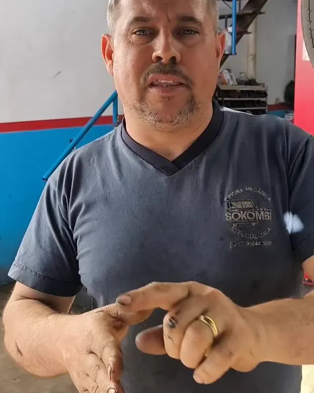
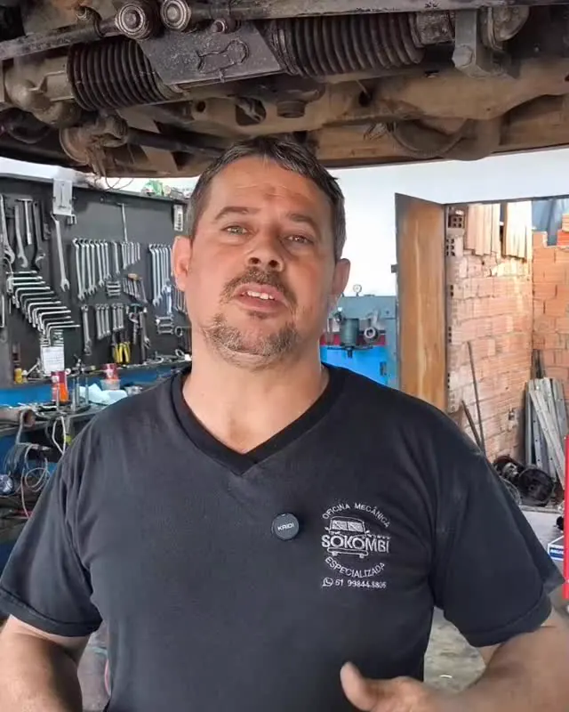
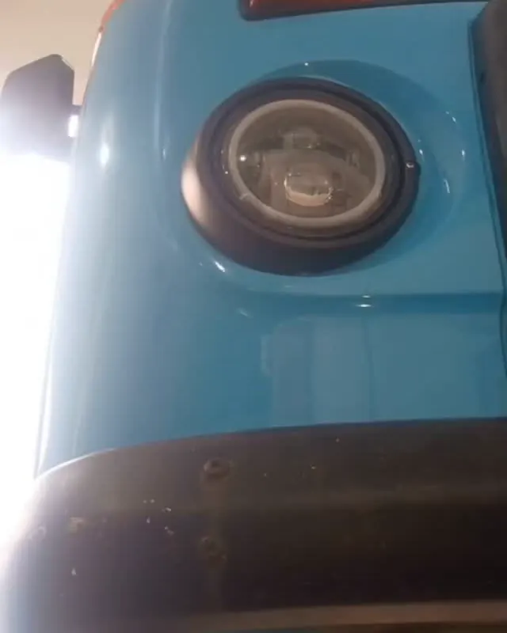
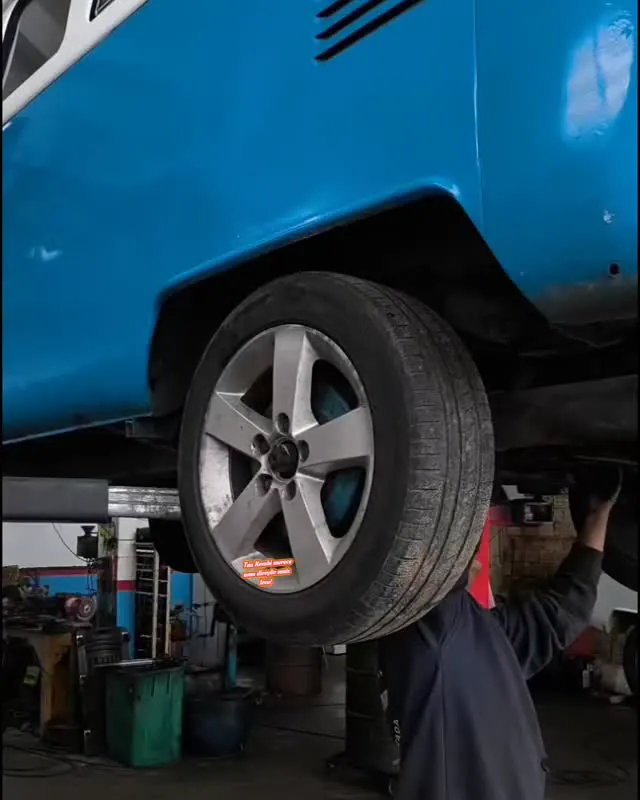
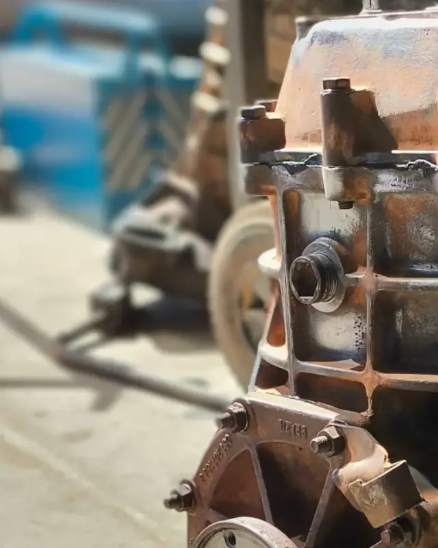
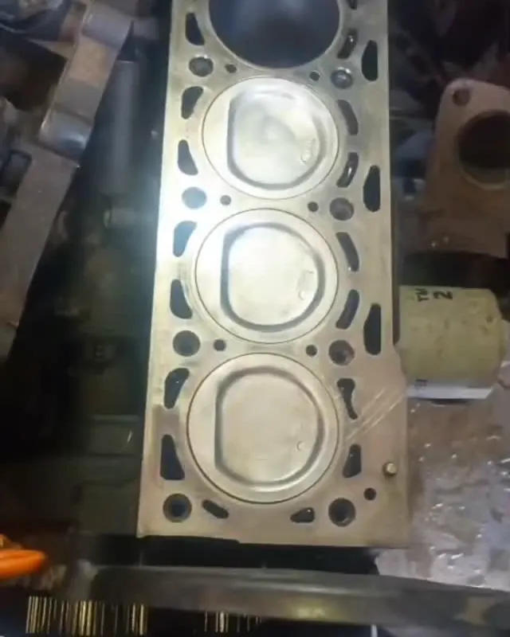
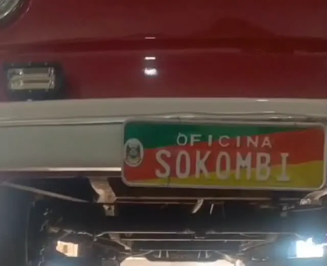
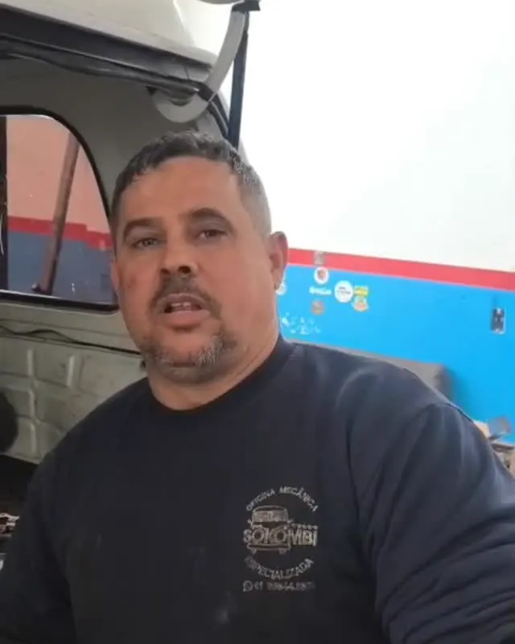
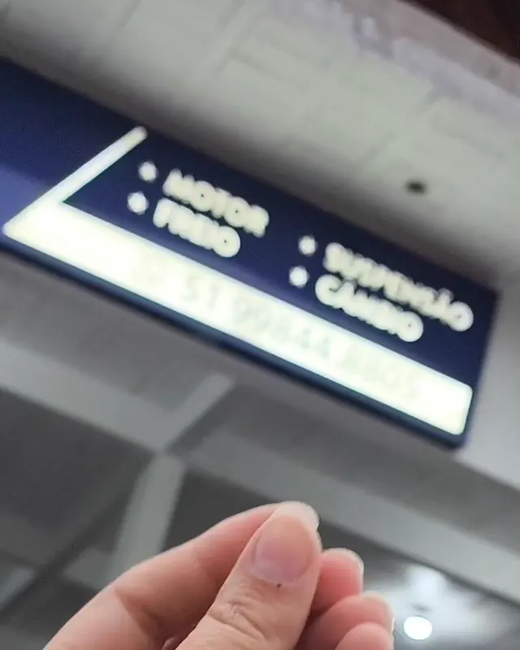

Oficina mecânica especializada · Canoas/RS
Apenas Kombi.
Setor de Monza, caixa de câmbio, pivôs e mecânica geral. Aqui não entra outro carro: é só Kombi, todo dia.
Seg a sex 8h–12h e 14h–18h · sáb 9h–14h
- 4,9★nota no Google
- 80avaliações
- 94%deram 5 estrelas
- 24 milseguidores no Facebook
- Fonte: perfil no Google (75 de 80 avaliações com 5 estrelas) e página do Facebook, consultados em 05/11/2026.
A especialidade da casa
Setor de Monza
“O melhor investimento que tu pode fazer na tua Kombi é colocar um setor de Monza aqui na oficina!”— Só Kombi, no Instagram
“Agora não precisa mais se aquecer antes de pegar no volante.”— sobre mais um cliente com o setor novo, no Instagram
Sistema totalmente parafusado, sem solda, instalado aqui na oficina em 1 a 2 dias. Agende o teu e viaje tranquilo.
Quero o setor de Monza
Serviços
Tudo da Kombi, num lugar só
Da direção ao câmbio, quem mexe na tua Kombi conhece cada parafuso dela.
Setor de Monza
Sistema totalmente parafusado, sem solda, para dirigir a Kombi com mais conforto e segurança. Instalação em 1 a 2 dias.
Caixa de câmbio
Conserto e montagem. Caixa disponível para venda, na troca ou sem troca.
Suspensão e pivôs
Pivôs, suspensão e o que deixa a Kombi firme na estrada.
Freio
Revisão e conserto do sistema de freio.
Motor
Comando de válvulas, cabeçote e manutenção do motor.
Embreagem e escape
Regulagem da embreagem e troca do coletor de escape.
Mecânica geral
Manutenção completa, sempre com hora marcada.
Peças de qualidade e de primeira linha.

Quem cuida da tua Kombi
O Balão e a equipe
“O Balão é gente muito boa, e entende muito de Kombi.”
— avaliação no Google, setembro de 2026
Na oficina do bairro Rio Branco, em Canoas, a equipe mostra o dia a dia no Instagram e tira dúvidas de quem tem Kombi. No canal do Balão no YouTube tem ainda mais.
Bastidores
Um dia na oficina
Tem mais vídeo e mais Kombi no Instagram da casa.







Quem já deixou a Kombi aqui
Nota 4,9 no Google
Melhor oficina especializada! O atendimento é excelente e o serviço prestado demonstra que eles realmente entendem do assunto. Deixei minha Kombi com total tranquilidade.
Google · novembro de 2026A melhor oficina de Kombi que tem. Serviço de procedência.
Google · junho de 2026Excelente atendimento e preço justo!
Google · setembro de 2026Serviços especializados de primeira categoria. Super indico.
Google · outubro de 2026Pensou em manutenção para sua Kombi, já sabe aonde ir. Recomendo com certeza.
Google · agosto de 2026Ótimo atendimento e serviços de manutenção de qualidade!
Google · fevereiro de 2026Trechos de avaliações reais do Google, sem o nome de quem escreveu (coletados em 05/11/2026).
Visite
Rio Branco, Canoas
Seg a sex 8h–12h e 14h–18h · sáb 9h–14h
- Segunda8h–12h · 14h–18h
- Terça8h–12h · 14h–18h
- Quarta8h–12h · 14h–18h
- Quinta8h–12h · 14h–18h
- Sexta8h–12h · 14h–18h
- Sábado9h–14h
- DomingoFechado
Endereço R. Barão de Mauá, 2020 — Rio Branco, Canoas/RS, 92200-190
Hora marcada recomendada: agende pelo WhatsApp (51) 99844-8805 ou ligue (51) 2160-7275
Pagamento crédito, débito e aproximação
Acessibilidade entrada acessível para cadeira de rodas
Perguntas
Antes de vir
Vocês atendem outros carros?
Não. Aqui é apenas Kombi.
Precisa marcar hora?
É recomendado. Chame no WhatsApp (51) 99844-8805 e combine o melhor dia para a tua Kombi.
Vocês enviam o setor de Monza?
Não: o setor é só instalado aqui na oficina. O serviço leva de 1 a 2 dias.
Vocês vendem caixa de câmbio?
Sim, na troca ou sem troca, nas relações 7×36 e 8×39. Consulte valores pelo WhatsApp.
Quais formas de pagamento?
Cartão de crédito, débito e pagamento por aproximação.
Onde fica a oficina?
R. Barão de Mauá, 2020, no bairro Rio Branco, em Canoas/RS.
Tua Kombi merece quem entende.
Chama no WhatsApp, conta o que a tua Kombi precisa e já marca o horário.
Agendar no WhatsApp